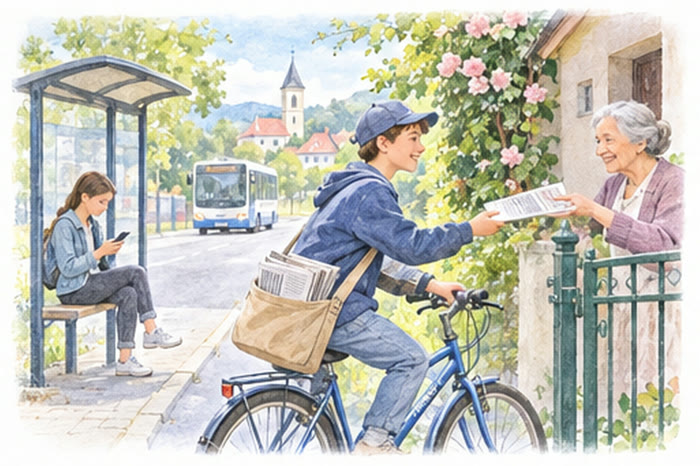

Listen to the text
Speed:

Our town has a small weekly newspaper. Last month it published an ad: "We are 80 years old! Tell us: do you prefer our print edition or the online version? The best answers will win a prize." Here are some messages that readers sent. "I am 71. I prefer the print edition. I cut out recipes and articles about our town and keep them in a box. You can't cut anything out of a screen. And my eyes get tired from a phone." Mrs Hanna "The online version, of course. I read it on the bus. It is free, and I can share an article with my friends in one second. Also, no trees are cut down for it." Denys, 16 "Both! I read the news online in the morning, because it is fast. But on Sunday I buy the paper, make coffee and read it slowly. That is my little holiday." Oksana, 34 "I prefer paper, because there are no ads that jump at you in the middle of an article. On the website I close five windows before I can read anything." Mr Vasyl, 58 "Online. I am eleven, and I only read the page with jokes and the weather. Sorry." Mark "I deliver your newspaper every Thursday on my bike. If there is no print edition, I will lose my job. So I prefer paper!" Tymur, 15 The editor answered everybody: "Thank you! We are keeping both versions. And, Mr Vasyl, you are right about the ads. We have removed half of them." The prize, a year of the newspaper for free, went to Tymur. In both versions.
Tap any sentence to hear it again.
Сподобалось? На сайті ще більше матеріалів для вчителів!
Reader, презентації, ігри, діагностичні та контрольні роботи до підручників 1-11 класів.
Перейти на сайт materials.allaenglish.com